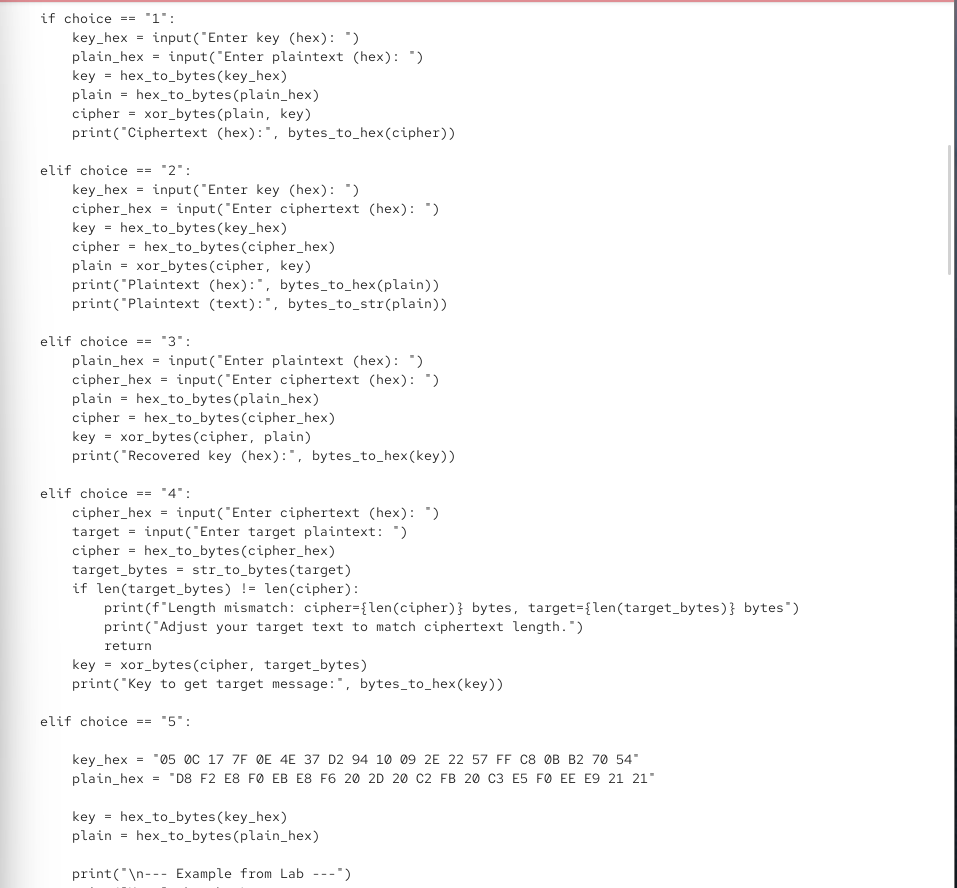
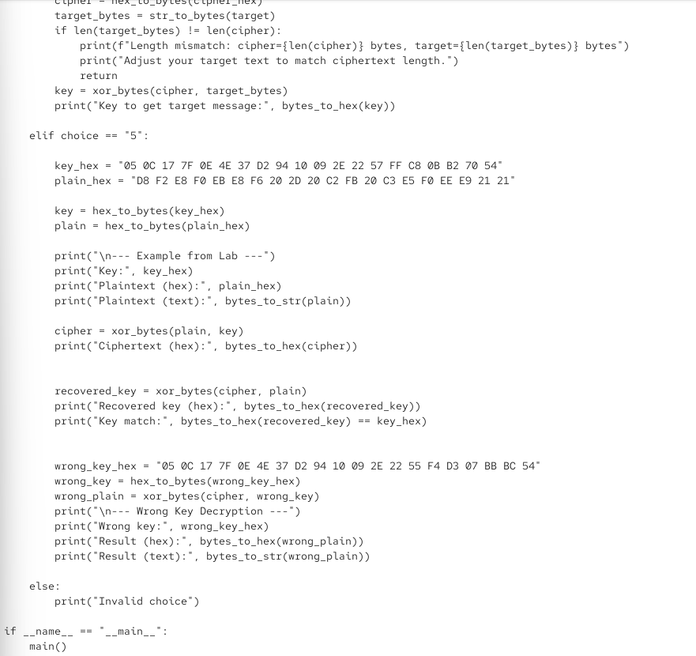
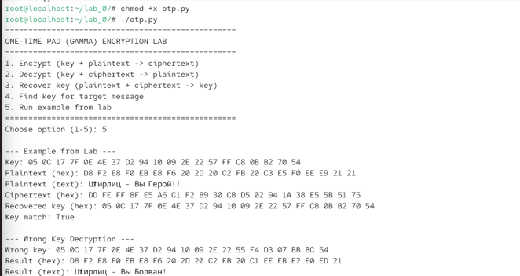
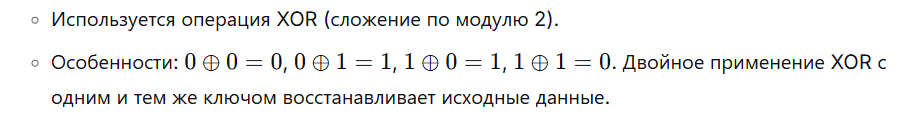

06.октябрь.2026
Элементы криптографии. Однократное гаммирование
Освоить на практике применение режима однократного гаммирования.
otp.py на языке Python,
реализующее режим однократного гаммирования (One-Time Pad).
Рис. 1 — Исходный код приложения otp.py (часть 1)
xor_bytes(data, key) — выполняет операцию XOR над двумя
байтовыми последовательностями одинаковой длины.hex_to_bytes(hex_str) — преобразует шестнадцатеричную
строку в байты.bytes_to_hex(b) — преобразует байты в шестнадцатеричную
строку.str_to_bytes(s) — преобразует строку в байты с
использованием кодировки CP1251 (для кириллицы).bytes_to_str(b) — преобразует байты в строку с
использованием кодировки CP1251.
Рис. 2 — Исходный код приложения otp.py (часть 2)
main() реализованы все пять режимов работы
приложения.
Рис. 3 — Исходный код приложения otp.py (часть 3)
chmod +x otp.py для предоставления
файлу прав на исполнение../otp.py для запуска приложения.Key: 05 0C 17 7F 0E 4E 37 D2 94 10 09 2E 22 57 FF C8 0B B2 70 54Plaintext (hex): D8 F2 E8 F0 EB E8 F6 20 2D 20 C2 FB 20 C3 E5 F0 EE E9 21 21Plaintext (text): Штирлиц – Вы Герой!!Ciphertext (hex): DD FE FF 8F E5 A6 C1 F2 B9 30 CB D5 02 94 1A 38 E5 5B 51 75Recovered key (hex): 05 0C 17 7F 0E 4E 37 D2 94 10 09 2E 22 57 FF C8 0B B2 70 54Key match: True
Рис. 4 — Запуск примера из лабораторной работы
Wrong key: 05 0C 17 7F 0E 4E 37 D2 94 10 09 2E 22 55 F4 D3 07 BB BC 54Result (hex): D8 F2 E8 F0 EB E8 F6 20 2D 20 C2 FB 20 C1 EE EB E2 E0 ED 21Result (text): Штирлиц – Вы Болван!
Рис. 5 — Дешифрование с неправильным ключом
DD FE FF 8F E5 A6 C1 F2 B9 30 CB D5 02 94 1A 38 E5 5B 51 75.С Новым Годом, друзья.0C DE 32 61 07 5D 20 D2 7A DE 2F 3B EE BB 3A DC 15 A8 B6 8A.
Рис. 6 — Подбор ключа для целевого сообщения
В ходе лабораторной работы было освоено на практике применение режима
однократного гаммирования. Разработано приложение otp.py,
позволяющее шифровать и дешифровать данные в режиме однократного
гаммирования, а также восстанавливать ключ по известным открытому тексту
и шифротексту и подбирать ключ для получения заданного целевого
сообщения.
Продемонстрировано, что при использовании правильного ключа исходный текст восстанавливается без искажений, а при использовании неправильного ключа получается искажённый текст. Показано, что знание шифротекста и целевого открытого текста позволяет вычислить ключ, с помощью которого можно преобразовать шифротекст в любое сообщение той же длины.
Полученные результаты согласуются с целью работы.